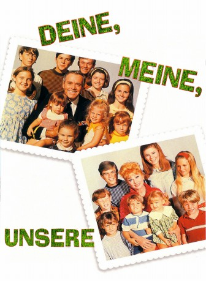
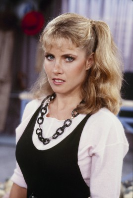

#6790 Deine, meine, unsere
Alternativ: Yours, Mine and Ours
 
 IMDB-Wertung: 7.2 / 10
IMDB-Wertung: 7.2 / 10  Metascore: 0
Metascore: 0 
Marineadmiral Frank ist Witwer - und hat zehn Kinder. Er quittiert den Dienst, um sich um sie besser kümmern zu können. Er lernt die nette Helen kennen. Die attraktive Witwe zieht alleine acht Kinder auf. Pikant: Beide verheimlichen zunächst vor einander ihren Nachwuchs.
Jahr: 1968
Dauer: 111 Minuten
FSK: 6
Land: USA Studio: United ArtistsTonspuren: DD2.0 - ,
Untertitel:
Auflösung: 1080p (1920x1040) Größe: 7833 MB
Genre: Komödie, Familie
Regisseur: Melville Shavelson
Drehbuch: Bob Carroll Jr.
Soundtrack:
Darsteller:
- Lucille Ball als Helen North Beardsley
 Henry Fonda als Frank Beardsley
Henry Fonda als Frank Beardsley Van Johnson als Warrant Officer Darrel Harrison
Van Johnson als Warrant Officer Darrel Harrison- Tom Bosley als Family Doctor
 Walter Brooke als Howard Beardsley
Walter Brooke als Howard Beardsley Tim Matheson als Mike Beardsley
Tim Matheson als Mike Beardsley- Gary Goetzman als Greg Beardsley
- Morgan Brittany als Louise Beardsley
- Tracy Nelson als Germaine Beardsley
-  Kimberly Beck als Janette North
- Mitch Vogel als Tommy North
- Eric Shea als Phillip North
- Ben Murphy als Larry
 Marjorie Eaton als Housekeeper #3
Marjorie Eaton als Housekeeper #3 Lilyan Chauvin als French Actress on TV Screen
Lilyan Chauvin als French Actress on TV Screen- Eve Bruce als 2nd Young Lady
 Stuart Nisbet als Man of the Cloth
Stuart Nisbet als Man of the Cloth- Arthur Peterson als Priest
 Larry Hankin als Supermarket Clerk / Harry
Larry Hankin als Supermarket Clerk / Harry Harry Holcombe als Judge
Harry Holcombe als Judge Leon Alton als Wedding Guest , uncredited
Leon Alton als Wedding Guest , uncredited Leoda Richards als Wedding Guest , uncredited
Leoda Richards als Wedding Guest , uncredited- Louise Troy als Madeleine Love
- Sidney Miller als Dr. Ashford
- Nancy Howard als Nancy Beardsley
- Gil Rogers als Rusty Beardsley
- Nancy Roth als Rosemary Beardsley
- Holly O'Brien als Susan Beardsley
- Michele Tobin als Veronica Beardsley
- Maralee Foster als Mary Beardsley
- Stephanie Oliver als Joan Beardsley
- Jennifer Leak als Colleen North
- Kevin Burchett als Nicky North
- Margot Jane als Jean North
- Greg Atkins als Gerald North
- Lynnell Atkins als Teresa North
- Ysabel MacCloskey als Housekeeper #1
- Pauline Hague als Housekeeper #2
- Richard Angarola als French Actor on TV Screen
- Robert P. Lieb als Happy San Franciscan
- Jennifer Gan als 1st Young Lady
- Susan Carr als 3rd Young Lady
- Paul Potash als Hippie
- Patty Elder als Waitress
- George Jue als Chinese Store Proprietor
- Mary Gregory als Sister Mary Alice
- Lawrence Heller als Medical Assistant
- Marti Litis als Hospital Nurse
- George Boyce als Wedding Guest , uncredited
- Paul Bradley als Club Patron , uncredited
Datei: X:\2-Dilogie(A-F)\Deine, meine, unsere\Deine, meine, unsere (1968, FSK6, 1920x1040).mkv seit 30.08.2017
Festplatte: HD Collection-2(A-Z)-3(A-M)
 Alle Filme aus Gruppe '2-Dilogie(A-F)\Deine, meine, unsere'
Alle Filme aus Gruppe '2-Dilogie(A-F)\Deine, meine, unsere'